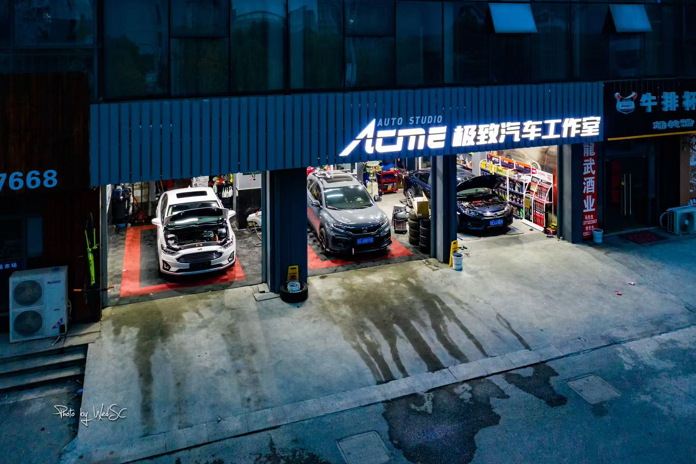

Story about Lerex — How Passion and Expertise Built Our Foundation
Lerex Trading wasn't born from a business plan. It was born from a shared love for cars, a decade-long friendship, and two complementary skill sets that, when combined, create something stronger than either could achieve alone.

Two Friends, One Shared Passion
Mark and Shorey first met in 2015 — not in an office or a trade show, but on a racetrack. Both were passionate about automotive modification and performance driving. What started as weekend track days and late-night garage sessions turned into a friendship built on shared values: attention to detail, respect for craftsmanship, and an obsession with getting things right.
Over the years, as they worked on cars together, installed parts, tested products, and discussed the automotive industry, they realized something important: they each had half of what it takes to build a truly service-oriented automotive company. And together, they had everything.
Mark's Background: International Trade Expertise
Mark brings 12 years of international trade experience to Lerex. He spent 9 years working for a publicly listed trading group, where he managed sourcing projects for some of the world's largest retail chains — including Tesco, Costco, and Lidl. He also worked closely with well-known brands like GANT, Craft, and Bonita.
These weren't simple buy-and-sell transactions. They were complex, multi-stakeholder projects requiring precise communication, strict quality control, realistic timeline coordination, and the ability to manage expectations across different cultures and business models.
After that, Mark spent 3 years in a private trading company, where he honed his skills in building long-term relationships, solving practical sourcing problems, and understanding what international buyers truly need — not just low prices, but reliability, clarity, and support.
"I learned that great sourcing isn't about finding the cheapest factory. It's about finding the right partner, managing expectations honestly, and delivering what you promised — every single time."
Shorey's Background: Automotive Aftermarket Expertise
Shorey's strength is different but equally essential. He has 8 years of hands-on experience running automotive aftermarket businesses — starting from a small workshop and growing it into a professional automotive detailing and modification shop.
This isn't just retail experience. It's real-world product knowledge. Shorey knows how parts fit, how finishes wear, how customers judge quality, and what actually matters when a product is installed and used daily. He's dealt with supplier inconsistencies, quality issues, customer complaints, and the gap between factory specifications and real-world performance.
Beyond the store, Shorey has built deep relationships with factories across different automotive product categories. He understands production processes, can evaluate factory capabilities, spot quality issues before they become problems, and communicate technical requirements in a way that factories actually understand and respect.
"Most trading companies have never installed the parts they sell. I've installed thousands. I know what works, what fails, and what customers will come back to buy again."
Why Lerex Exists: Combining Strengths to Serve Better
In 2025, after years of discussing the automotive industry, sourcing challenges, and the gap between what international buyers need and what most Chinese trading companies offer, Mark and Shorey decided to create something different.
Lerex Trading was founded on four core principles:
- Start with passion. We love cars. We care about quality. We're not here just to make transactions.
- Leverage complementary expertise. Mark brings trade execution and international buyer understanding. Shorey brings product knowledge and factory relationships.
- Put service first. Our goal isn't to sell the most — it's to support customers in building stable, valuable sourcing relationships.
- Create win-win outcomes. Success means customers achieve their goals, suppliers are treated fairly, and we build long-term partnerships based on trust.
What Makes Us Different
Most Chinese trading companies are either former salespeople who know how to communicate but lack product expertise, or former factory workers who understand products but struggle with international business practices.
Lerex is different because we combine both. We understand what international buyers expect because Mark has worked with them for over a decade. We understand what products should actually deliver because Shorey has installed them, sold them, and dealt with real customer feedback for 8 years.
This combination allows us to:
- Communicate customer requirements to factories more accurately
- Evaluate factory capabilities and product quality more effectively
- Set realistic expectations on both sides
- Solve problems faster because we understand both perspectives
- Build sourcing relationships that last, not just one-time deals
Our Vision for the Future
We're not trying to be the biggest trading company in China. We're trying to be the most reliable, most knowledgeable, and most service-oriented partner for international customers who value quality, communication, and long-term relationships.
Whether you're sourcing brake systems for European distributors, alloy wheels for Middle Eastern retailers, or VIP seats for luxury van conversions, we bring the same approach: understand your real needs, find the right solution, coordinate everything clearly, and deliver what we promised.
That's the Lerex difference. And it all started with two friends who love cars and believe that trading should be built on expertise, honesty, and mutual respect.
Want to work with a team that truly understands both sides of the sourcing process?
Get in touch with us — let's talk about your project.